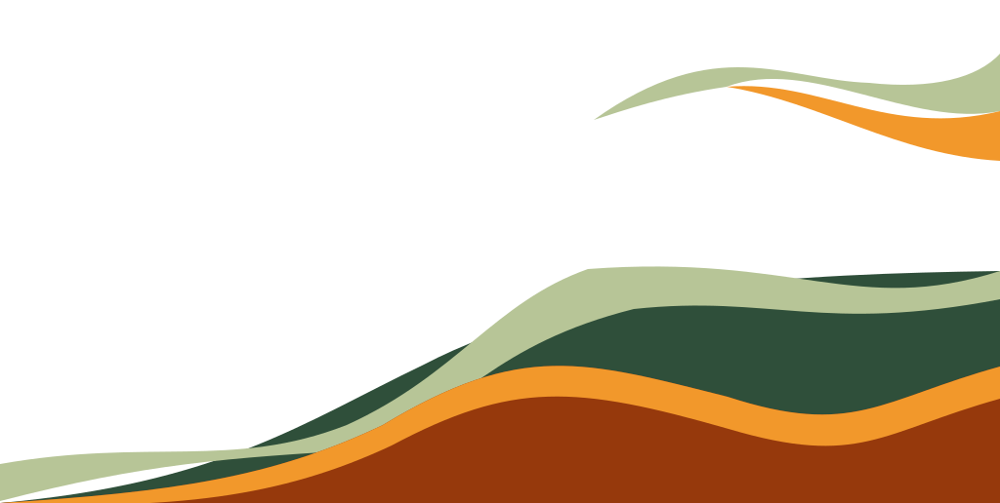
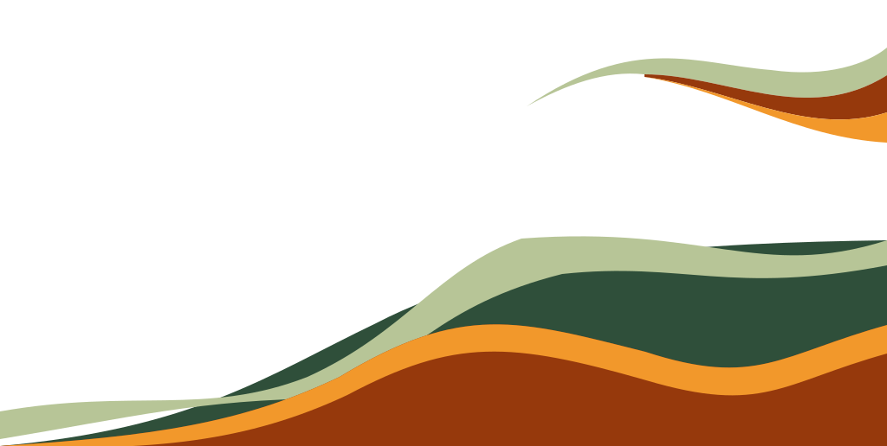
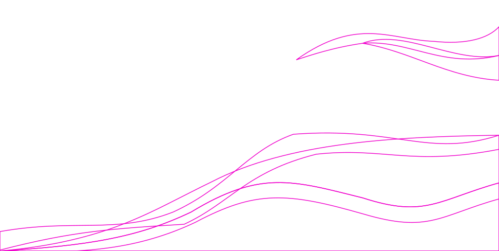
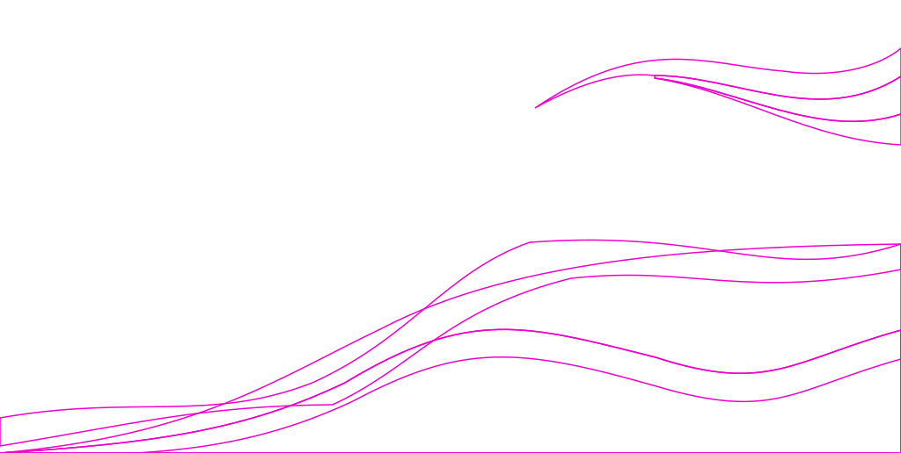
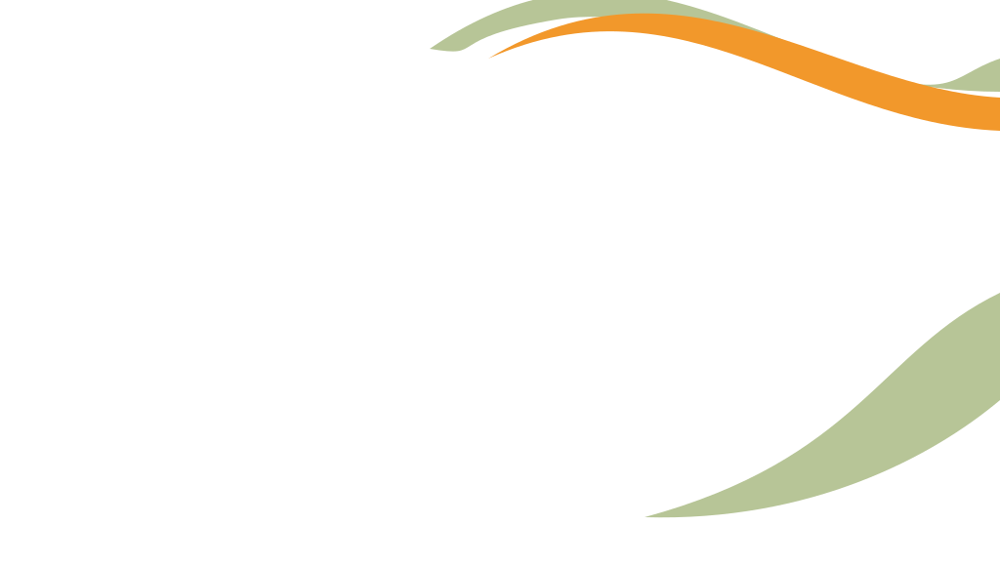
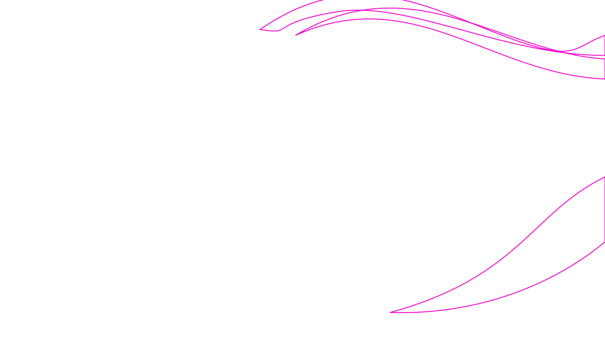
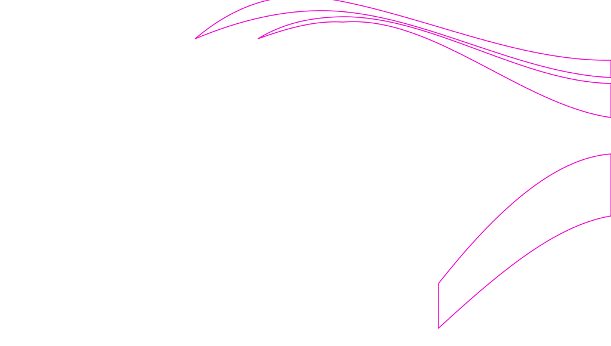

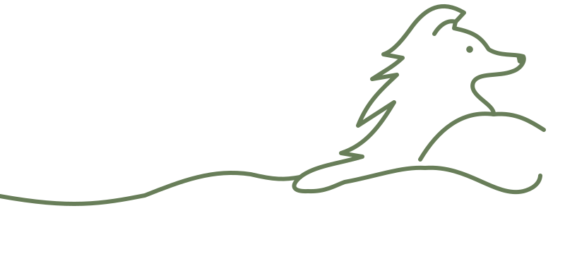
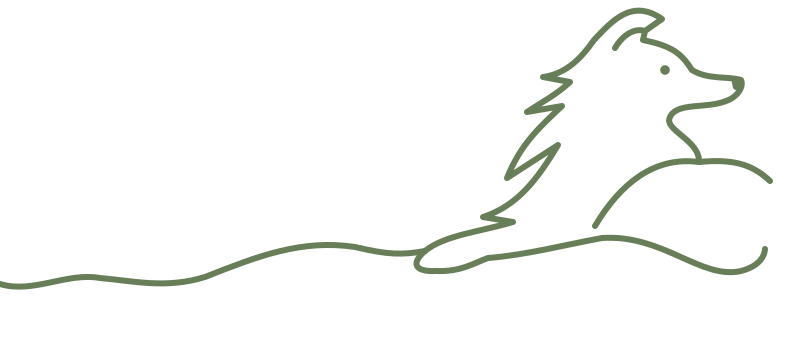
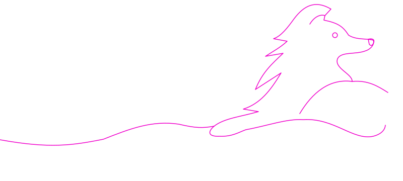
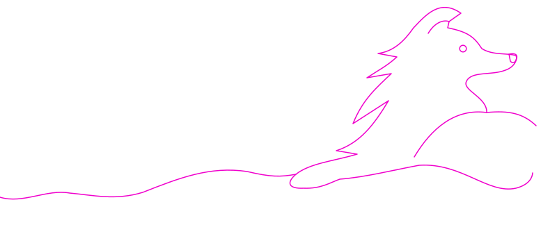











Same native coordinates. Drag to pan; zoom moves both layers together. Compare original and refined authoring curves before evaluating responsive page placement. Blue dots mark sampled raster boundaries; magenta dots/lines show SVG displacement. AI text, cards, phones, shading and orange dog mane are excluded from measurements.
| Region | Sample intersections | Mean absolute offset px | Maximum absolute offset px |
|---|---|---|---|
| hero | 30 → 30 | 4.67 → 1.03 | 23 → 3 |
| features | 22 → 34 | 37.27 → 1.06 | 88 → 3 |
| collie | 27 → 28 | 3.09 → 1.46 | 12.0 → 4.0 |
Counts differ where the original curve did not intersect a selected window. This is a sparse, reproducible diagnostic, not a whole-image fit score. Reference thresholds and windows are in registration-manifest.json and compare-registered.py. No global transform was inferred. The page’s own symmetric divider and foreground remain independent.